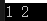
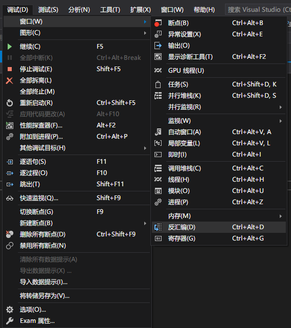
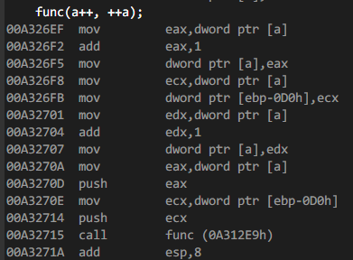
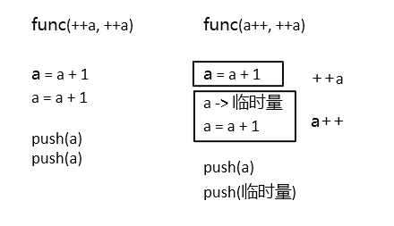

先看一段代码：
#include<iostream>
using namespace std;
void func(int a, int b)
{
cout << a << " " << b << endl;
}
int main()
{
int a = 0;
func(a++, ++a);
return 0;
}由于C++是从右向左入栈（与编译器的调用约定有关，不是C++标准的规定），所以刚看到代码的时候，我以为结果会是“1 1”（先将++a入栈，再将a++入栈），然而事实是： 。这是在VS上面运行的，在g++上也是一样的结果。幸好VS还可以查看汇编代码。
由于在VS上有十分方便的反汇编工具，所以接下来说的东西都基于VS2019自带的反汇编。
设置断点并调试，便可以打开反汇编窗口：

下面这段就是在调用func函数时的汇编代码：

mov eax,dword ptr [a]
add eax,1
mov dword ptr [a],eax //这三行指令将a+1
mov ecx,dword ptr [a]
mov dword ptr [ebp-0D0h],ecx //这两行指令将a的值存储到一个临时地址（寄存器间接寻址）中
mov edx,dword ptr [a]
add edx,1
mov dword ptr [a],edx /这三行指令又将a+1
mov eax,dword ptr [a]
push eax //这两行指令将a压入栈
mov ecx,dword ptr [ebp-0D0h]
push ecx //这两行指令将刚刚存储的临时地址的值压入栈
call func (0A312E9h) //调用func函数
add esp,8 //esp为栈指针寄存器 如果将代码改成
func(++a, ++a);
会是什么结果呢？答案是
mov eax,dword ptr [a]
add eax,1
mov dword ptr [a],eax //这三行指令将a+1
mov ecx,dword ptr [a]
add ecx,1
mov dword ptr [a],ecx //这三行指令将a+1
mov edx,dword ptr [a]
push edx //这两行指令将a压入栈
mov eax,dword ptr [a]
push eax //这两行指令将a压入栈
call func (09912E9h)
add esp,8 可以看到，将a++改成++a之后，指令少了将a的值保存起来的步骤，并且由于并非在读取参数时就压入栈，而是在所有参数的表达式执行完之后才压入，所以最后压入参数栈的都是最后的变量a。
那么结合汇编代码就不难理解文章开头为什么是“1 2”了，基本就是这样的区别（注意：读取参数和执行参数的表达式时也是从右往左的）：

在调用函数的时候，参数要避免使用自增和自减，避免出现混乱。
文章为作者结合个人理解编写，可能会有错漏的地方，如有错误，敬请指正。